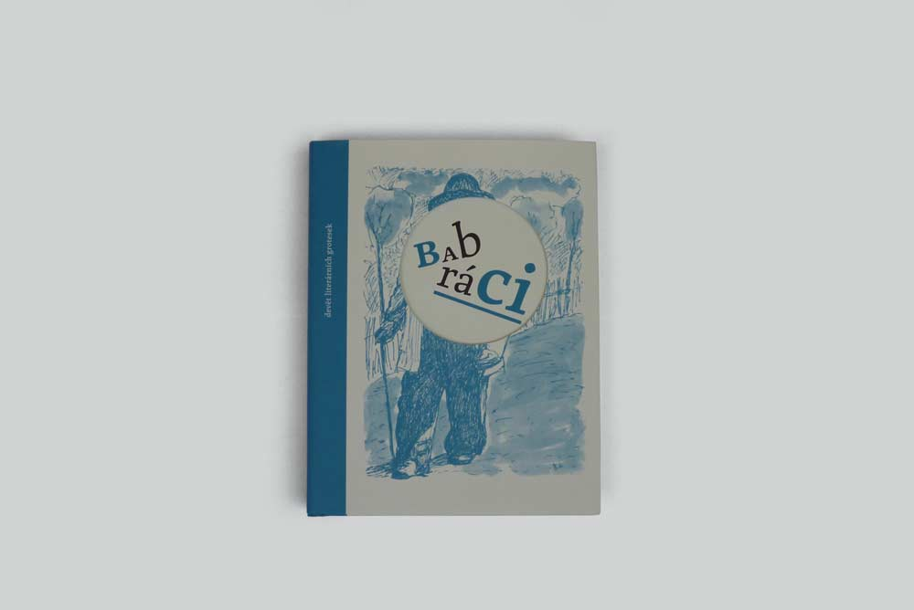

Fotografie, kterou chci upravit. Stín je zřetelný, přenesení by mělo jít snadno.
Fotografie po úpravě s přenesenými stíny a jednobarevným pozadí.
Při přenesení originálních stínů na nové pozadí začneme vymaskováním objektu. Maska musí být precizní, bez toho nám to později nebude fungovat. Hezké shrnutí jak lze maskovat je například v tomto videu.
Začínám maskou pozadí. Používám poněkud staromódní modifikaci rychlé masky za pomoci barevné vrstvy, které dám průhlednost cca 20% a pak malým štětcem objedu kontury objektu a dávám přitom pozor, aby tvrdost štětce odpovídala okrajům objektu.
Masku si schovám na později, udělám si kopii vrstvy s fotografií. Vložím si nad ní vrstvu úprav černá a bílá (tím se hodí barva stínů do neutrálních stupní šedi). A ještě vrtstvu úprav úrovně, pomocí které vytáhnu kontrast (pravý posuvník táhnu směrem doleva a pak středový doprava; tím dosáhnu vysokého kontrastu a izolaci stínu). Na mojí fotografii je hned hodně vidět šum, takže budu pracovat s úrovněmi obezřetně, nemusím mít pozadí úplně bílé.
Kopii vrstvy s fotografií hodím do černobílé a pomocí úrovní vytáhnu kontrast.
Vrstvu s kopií fotografie a vrstvy úprav si dám do jedné skupiny, kterou pojmenuji třeba stín a dám jí druh průhlednosti násobit. Pod tuto skupinu vložím výsledné pozadí, v mém případě plnou šedou barvu. Kliknu na skupinu stín a pomocí ctrl+alt+shift+E vytvořím novou sloučenou vrstvu.
Vrstvy, které budou představovat stín mám v jedné skupině, kterou si pak sloučím do další samostatné vrstvy.
Přidám si novou vrstvu úprav úrovně a udělám obraz co nejkontrastnější.
Novou sloučenou vrstvu udělám pomocí urovní co nejvíc kontrastní.
Opět si vše sloučím a pomocí ctrl+A a ctrl+C nakopíruji vrstvu do schránky. Skupině stín vytvořím rastrovou masku, kliknu na ni s levým altem a vložím pomocí ctrl+V. Pomocí ctrl+I invertuji masku a černým štětcem ji dotvořím do krajů.
Nově upravenou vrstvu si znovu sloučím a vložím ji do masky skupiny stín. Masku invertuji a černým štětcem dotvořím.
Z masky vyskočím opětovným kliknutím na masku skupiny s přidržením levého altu. Pracovní vrstvy nad skupinou stín si mohu smazat, už je nepotřebuji.
Nad skupinu stín si udělám novou vrstvu s kopií originální fotografie a přidám masku, kterou jsem si vytvořil v prvním kroku. Masku invertuji, aby se mi vykrylo původní pozadí. Stín je přenesený, barvu pozadí si mohu měnit pomocí změny vrstvy s plnou barvou.
Vzhledem k tomu, že původní pozadí je bílé, bude nové pozadí vypadat uvěřitelně pokud bude světlé. Pro tmavé pozadí bude ještě potřeba upravit objekt.
Přenesení stínů se povedlo, ještě to chce upravit obal knížky, o tom bude další, samostatný článek.
Nyní jsou originální stíny přenesené, stačí si vybrat barvu pozadí.